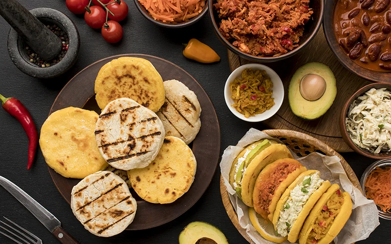

Deliciosas recetas de diferetes tipos de comida
PICADILLO
En una olla, calienta el aceite y sofríe la cebolla,
papa, zanahoria y calabacita hasta que estén ligeramente
doradas.Agrega la carne molida a la olla y cocina hasta
que cambie de color.Licúa el jitomate, cebolla y agua. Cuela y
agrega a la olla.cocina a fuego bajo durante 10-12 minutos
o hasta que la carne esté cocida y las verduras estén tiernas.
BIRRIA DE RES
Lava y desinfecta la carne de res. Corta en trozos medianos.Limpia los
chiles guajillos y anchos, quita las semillas y corta en tiras. Asa los
chiles en una sartén caliente hasta que estén aromatizados, sin dejar
que se quemen. Remoja los chiles en agua caliente durante unos 15-20 minutos,
hasta que estén suaves.espués, colócalos en una licuadora con los ajos,
orégano, pimienta negra, clavos de olor, laurel, sal . Licua hasta obtener
una salsa homogénea.Transfiere la carne y la marinada a una olla grande.
Añade suficiente agua para cubrir la carne y cocina a fuego medio-bajo durante
aproximadamente 2-3 horas, o hasta que la carne esté tierna y se deshaga fácilmente.
TINGA DE POLLO
En una olla hierve el agua y cocina el pollo con la cebolla, el ajo, y un poco de sal alrededor
de 50 minutos o hasta que esté cocido. Reserva el caldo y desmenuza el pollo.Para el caldillo,
licúa los jitomates con la cebolla, el ajo, el chile chipotle, una taza de caldo de pollo, sal y
pimienta hasta obtener una mezcla tersa.En un sartén profundo, cocina la cebolla fileteada con el
aceite hasta que esté transparente. Agrega el caldillo, deja que suelte el hervor y cocina alrededor
de 20 minutos. Añade el pollo, sazona y cocina 10 minutos más.Sirve y acompaña con crema y lechuga.
MORISQUETA
Lavar bajo el chorro de agua y escurrir el arroz.En una cazuelita con tapa calentar las 2 tazas
y media de agua con la sal, al romper el hervor añadir el arroz, mover ligeramente, tapar,
bajar el fuego.Al consumirse por completo el líquido, retirar del fuego y dejar reposar tapado
por 10 minutos para que esponje.Servir acompañado de su guiso preferido puede ser a base de
frijol o carne.
UCHEPOS
Pelamos y limpiamos los elotes(reserva las hojas), cortamos y reservamos
(mientras pon las hojas en agua caliente para que se ablande, antes de usar secar)
En un recipiente agregamos las manteca, mantequilla y cremamos, poco a poco anegados,
polvo para hornear y harina.En el procesador procesamos el elote poco a poco y
agregamos a la mezcla una vez listo este paso comenzamos a envolver.Vamos colocando en
una vaporera, tapamos con más hojas de elote y listo a fuego lento por 1 h y 30 min y a disfrutar
MOLE
Remoja el chocolate en el caldo caliente.Calienta 1 cucharada de aceite en un sartén
a fuego medio y fríe los chiles hasta que se doren ligeramenteRetira los chiles del sartén
y agrega 2 cucharadas de aceite. Fríe las 2 tortillas en el aceite caliente.
Muele en la licuadora el chocolate con el caldo, chiles, y las tortillas fritas, hasta tener
una salsa homogénea.Vierte el mole en una cacerola con una cucharada de aceite caliente
y fríe.Rectifica el sazón y agrega agua o caldo al gusto.Sirve sobre piezas de pollo cocidas.